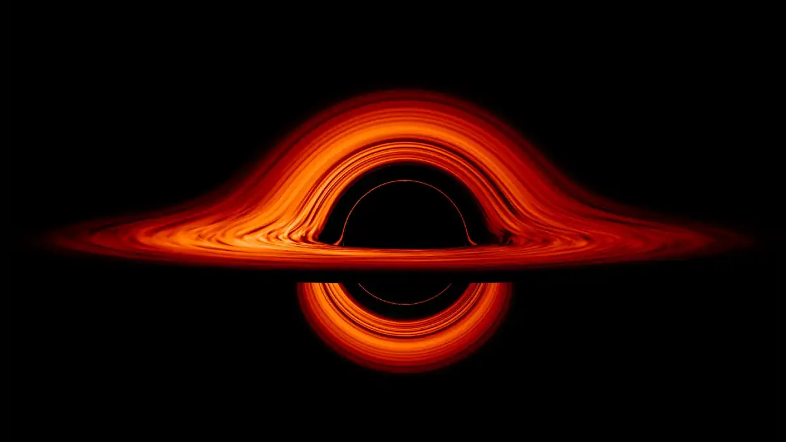
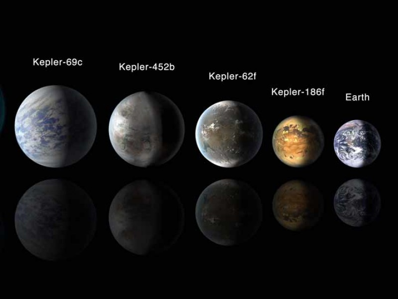
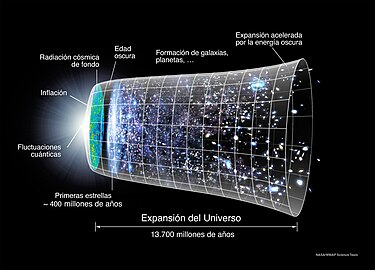

Los agujeros negros son regiones del espacio-tiempo con una fuerza gravitacional tan intensa que nada, ni siquiera la luz, puede escapar de su atracción. Se forman a partir del colapso de estrellas masivas al final de su vida. Los agujeros negros pueden variar en tamaño, desde pequeños hasta supermasivos, y su estudio ha revelado fascinantes conexiones entre la gravedad, la teoría cuántica y la relatividad general de Einstein.

Más información
| Aspecto |
Descripción |
| Formación |
Se forman a partir del colapso de estrellas masivas al agotar su combustible nuclear. |
| Tamaños |
Agujeros negros estelares (varias masas solares), intermedios (miles a decenas de miles), supermasivos (millones a miles de millones). |
| Horizonte de Sucesos |
Límite a partir del cual nada puede escapar de la gravedad del agujero negro. |
| Paradoja de la Información |
Desafío teórico sobre la pérdida de información cuántica en la formación y evaporación de agujeros negros. |
| Radiación Hawking |
Fenómeno teórico propuesto por Stephen Hawking donde los agujeros negros emiten radiación térmica debido a efectos cuánticos. |
| Relación con la Gravedad |
Conexiones fundamentales entre la gravedad, la teoría cuántica y la relatividad general de Einstein. |
La lista proporcionada se centra en diversos aspectos relacionados con los agujeros negros. Aquí hay un resumen más detallado:
- Regiones del Espacio-Tiempo: Se describe a los agujeros negros como áreas específicas en el espacio-tiempo, subrayando su conexión con la teoría de la relatividad.
- Fuerza Gravitacional Intensa: Destaca la característica distintiva de los agujeros negros: una fuerza gravitacional tan potente que incluso la luz no puede escapar de su influencia.
- Formación a partir del Colapso Estelar: Explica el origen de los agujeros negros, que se generan a través del colapso de estrellas masivas al final de su ciclo de vida.
- Variabilidad en Tamaño: Menciona la diversidad de tamaños que pueden tener los agujeros negros, desde pequeños hasta supermasivos, lo que destaca su heterogeneidad en el universo.
- Conexiones entre Gravedad, Teoría Cuántica y Relatividad General: Subraya la importancia de los agujeros negros en la investigación científica al revelar conexiones fascinantes entre la gravedad, la teoría cuántica y la relatividad general de Einstein.
Exoplanetas
La búsqueda de exoplanetas, planetas que orbitan estrellas fuera de nuestro sistema solar, ha revelado una gran diversidad de mundos más allá de nuestro vecindario cósmico. Cientos de miles de exoplanetas han sido descubiertos hasta la fecha, algunos de los cuales podrían tener condiciones propicias para la vida. Estos descubrimientos han desafiado nuestras concepciones sobre la posibilidad de vida en el universo y han impulsado investigaciones sobre la habitabilidad en otros sistemas estelares.

Más información
| Aspecto |
Descripción |
| Diversidad de Exoplanetas |
Desde gigantes gaseosos hasta planetas rocosos similares a la Tierra, se ha descubierto una amplia variedad de mundos. |
| Métodos de Detección |
Los métodos comunes incluyen el de tránsito (observando disminuciones en la luz estelar cuando un planeta pasa frente a la estrella) y el de velocidad radial (detectando variaciones en la velocidad de la estrella causadas por un planeta en órbita). |
| Habitabilidad y Zona Habitable |
La "zona habitable" es la región alrededor de una estrella donde las condiciones podrían permitir la existencia de agua líquida, un componente crucial para la vida. |
| Exoplanetas Potencialmente Habitables |
Algunos exoplanetas, como Kepler-186f y TRAPPIST-1e, se encuentran en la zona habitable y podrían tener condiciones adecuadas para la vida. |
| Tecnología Futura |
Telescopios espaciales como el Telescopio Espacial James Webb (JWST) están diseñados para estudiar la atmósfera de exoplanetas, proporcionando más información sobre sus composiciones y posibles signos de vida. |
Descubrimientos Exoplanetarios: Una Mirada Detallada
- Diversidad de Exoplanetas:
- Variedad desde gigantes gaseosos a rocosos.
- Identificación de planetas en zonas habitables.
- Métodos de Detección:
- Tránsito: Observación de disminuciones en luz estelar.
- Velocidad radial: Variaciones en velocidad estelar por un planeta.
- Habitabilidad y Zona Habitable:
- "Zona habitable": Región para agua líquida en superficie.
- Exoplanetas Potencialmente Habitables:
- Algunos en zonas habitables, como Kepler-186f y TRAPPIST-1e.
- Tecnología Futura:
- Avances para mejorar detección y estudio de atmósferas.
- Telescopios como el JWST impulsan la exploración exoplanetaria.
Energía Oscura
La energía oscura es un misterioso componente del universo que contribuye a la expansión acelerada del cosmos. A pesar de constituir aproximadamente el 70% de la energía del universo, su naturaleza exacta sigue siendo desconocida. Investigaciones actuales buscan comprender si la energía oscura es una propiedad constante del espacio o si varía con el tiempo. El estudio de la energía oscura no solo desafia nuestras comprensiones fundamentales de la física, sino que también tiene implicaciones profundas para el destino a largo plazo del universo.

Más información
| Concepto |
Información |
| Energía Oscura |
Misterioso componente del universo que contribuye al 70% de la energía total. Su existencia se postuló para explicar la aceleración de la expansión cósmica. |
| Naturaleza |
Desconocida; puede ser una constante cosmológica o un campo escalar dinámico. |
| Teorías Actuales |
Investigaciones para determinar si la energía oscura es constante o varía con el tiempo. Modelos teóricos sugieren relaciones con campos escalares. |
| Implicaciones |
Desafía las comprensiones fundamentales de la física. Tiene implicaciones para el destino a largo plazo del universo, afectando la expansión cósmica. |
| Observaciones |
Estudio de supernovas distantes, radiación cósmica de fondo de microondas, y distribución de grandes estructuras cósmicas para comprender su naturaleza. |
La lista proporcionada se centra en diversos aspectos relacionados con los agujeros negros. Aquí hay un resumen más detallado:
- Regiones del Espacio-Tiempo: Los agujeros negros se describen como áreas específicas en el espacio-tiempo, lo que resalta su conexión con la teoría de la relatividad.
- Fuerza Gravitacional Intensa: Se destaca la característica distintiva de los agujeros negros, que es una fuerza gravitacional tan potente que incluso la luz no puede escapar de su influencia.
- Formación a partir del Colapso Estelar: Se explica el origen de los agujeros negros, que se generan a través del colapso de estrellas masivas al final de su ciclo de vida.
- Variabilidad en Tamaño: Se menciona la diversidad de tamaños que pueden tener los agujeros negros, desde pequeños hasta supermasivos, subrayando su heterogeneidad en el universo.
- Conexiones entre Gravedad, Teoría Cuántica y Relatividad General: Se resalta la importancia de los agujeros negros en la investigación científica al revelar conexiones fascinantes entre la gravedad, la teoría cuántica y la relatividad general de Einstein.
llena los campos